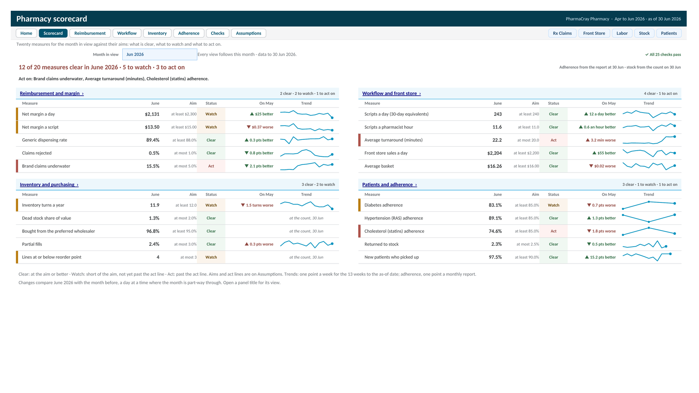

PharmaCray Retail Pharmacy Analytics
A fourteen tab Excel workbook, with a Google Sheets version, for an independent retail pharmacy. It scores twenty measures against their targets for any month, from net margin after DIR to star adherence, and shows what each PBM really pays, when the counter is busy, what to reorder, and which patients to call. 25 built in checks sit underneath.

PharmaCray models an independent retail pharmacy. Five inputs go in: claims from the pharmacy system, one row per script sent to a PBM, the daily till summary, timesheet hours, the stock count, and the monthly adherence report. Every claim's status, picked up, in the bin, returned to stock, or rejected, is worked out from its dates against the as of date, and a script counts as revenue only once it is picked up. Net margin then takes off the drug cost and the DIR each PBM claws back later.
The Scorecard puts twenty measures in four equal panels: reimbursement and margin, workflow and front store, inventory and purchasing, and patients and adherence. Each shows the month in view against its aim, a Clear, Watch, or Act status, the change on the month before in words, and a trend over the last 13 weeks, or over the last three adherence reports. A month picker drives every view, and a line at the top names what to act on first.
Reimbursement breaks the month down by PBM: revenue, drug cost, DIR, net margin a script, rejections, brand claims underwater after DIR, and what each PBM still owes, with a weekly chart of margin and DIR and the drugs that lost the most. Workflow shows scripts a pharmacist hour and turnaround by week, a heatmap of the busy hours, and front store sales by category. Inventory covers stock value and turns by class, dead stock, lines to reorder, and the preferred wholesaler. Adherence shows each star measure as the share of patients at a PDC of 80% or more, MedSync patients against the rest, how new patients start, and the patients to call, lowest PDC first.
A Checks tab runs 25 tests on every refresh, from reconciliations that must read zero, such as net margin by PBM against the month's net margin, to data quality counts like claims filled outside store hours, a PBM missing from Assumptions, or a day with fills and no labor row. PharmaCray Pharmacy is fictional and every figure is illustrative. The data runs from April to June 2026: in June, 12 of the 20 measures are clear, and brand claims underwater, turnaround, and statin adherence need action. Set the as of date back and every view shows the pharmacy as it stood then.